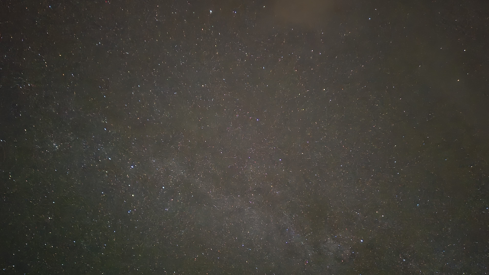
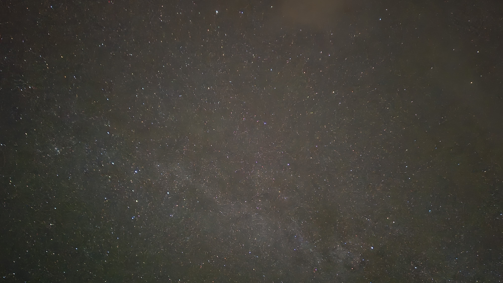

Our Hiking Adventure in Lofoten
Four international students, one passion: hiking. As outdoor enthusiasts, it was clear that our shared love for nature would lead us on a hiking adventure during our stay abroad. After much consideration, the Lofoten Islands emerged as the perfect destination, offering the rugged beauty and challenge we were all craving. Known for its dramatic mountain peaks, sweeping ocean views, and remote trails, Lofoten promised an unforgettable experience.
On September 25th, we packed our gear and set off to explore this stunning part of Norway. The combination of towering mountains, pristine landscapes, and breathtaking views made every step worthwhile, cementing Lofoten as a highlight of our stay in Norway.
Hiking trails we explored
From steep mountain trails to scenic costal walks, Lofoten has something for everyone. Our first hike took us to the stunning Offersøykammen. This trail, while short, offered amazing views over the surrounding fjords, with the peaks rising dramatically from the sea.


Our next adventure was the challenging but rewarding hike to Djevelporten and Fløya. The trail was steep, but reaching Djevelporten – a large rock suspended between two cliffs – was worth every step. From there, we continued to Fløya for a panoramic view of Svolvær and the surrounding islands.


One of the highlights was the hike to Ryten The hike was relatively easy, and we were rewarded with a breathtaking view of a beautiful beach cove. To make the experience even more memorable, it started snowing while we were on top of the mountain.

Recommended hikes in Lofoten
If you're planning your own hiking trip in Lofoten, we highly recommend checking out this guide to the best hikes. It features detailed routes and tips for each trail. If you'd like to explore the trails we hiked, you can download the GPX files below and use them in your own GPS device for your next trip to Lofoten.
Fishing Villages in Lofoten
Lofoten is not only known for its breathtaking hikes but also for its picturesque fishing villages. We visited the charming village of Nusfjord, where traditional red fishermen’s cabins, or rorbuer, line the water’s edge, creating a postcard-perfect scene. These villages, nestled between towering mountains and the ocean, offer a glimpse into Lofoten's rich maritime history.


Starry Skies and Northern Lights
One of the most magical moments of our trip was witnessing the night sky in Lofoten. The clear, dark skies were dotted with countless stars, and to our amazement, we even caught a glimpse of the Northern Lights. The ethereal green glow dancing across the sky made for an unforgettable experience, adding a touch of magic to our hiking adventure.
 
